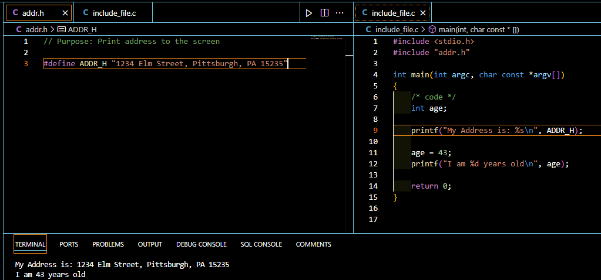

Introduction
C programming is one of the oldest and most influential programming languages, known for its structured programming, recursion, and portability. As a beginner C programmer, you’re about to embark on an exciting journey into a language that has shaped the world of software development. Two essential tools that will make your C programs more powerful and efficient are the #include and #define directives. In this article, we’ll explore how these preprocessor commands can enhance your code and streamline your programming process.
Understanding #include
What is #include?
The #include directive is a crucial component in C programming that allows you to integrate external files, typically header files, into your program. It’s always placed at the beginning of a C program and acts as a preprocessor command, instructing the compiler to include the contents of the specified file before compilation begins.
Purpose of #include
The primary purpose of #include is to bring in declarations and definitions from other files, making them available for use in your current program. This is particularly useful for accessing standard library functions, custom functions defined in other files, and shared constants or data structures. These files are best put before the main() part of your program.
Syntax and usage
The basic syntax for using #include is:
#include <filename.h>or
#include "filename.h"The angle brackets < > are used for system header files, while quotation marks " " are used for user-defined header files.
For example:
/* Your Source File */
age = 30;
printf("You are %d years old.\n", age);
#include "addr.h"
printf("That's my address");
/* addr.h */
printf("\n1234 Elm Street\n);
printf("Pittsburgh, PA 15235\n");
/* The Compiler Sees */
age = 30;
printf("You are %d years old.\n", age);
printf("\n1234 Elm Street\n);
printf("Pittsburgh, PA 15235\n");
printf("That's my address");Exploring #define
What is #define?
The #define directive in C is used to declare constant values or expressions with names that can be used repeatedly throughout your program. It’s a powerful tool for creating symbolic constants and macros. Per C Programming Absolute Beginner’s Guide, 3rd Edition, by Perry and Miller, “Constants that you define with #define are not variables, even though they sometimes look like variables when they are used.”.
Purpose of #define
The main purposes of #define are: 1. To create named constants that improve code readability and maintainability 2. To define macros that can simplify complex operations or repetitive code 3. To enable conditional compilation
Syntax and usage
The basic syntax for using #define is:
#define MACRO_NAME valueFor example:
#define PI 3.14159
#define MAX(a, b) ((a) > (b) ? (a) : (b))Benefits of Using #include
Code organization:
#includeallows you to separate your code into logical modules, making it easier to manage and maintain large projects.Reusability: By placing commonly used functions or definitions in header files, you can easily reuse them across multiple source files or projects.
Standard library access:
#includeprovides access to the wealth of functions and utilities available in the C standard library, such asprintf()andscanf().
Advantages of #define
Creating symbolic constants:
#defineallows you to create named constants, improving code readability and making it easier to update values throughout your program.Macro definitions: You can define complex operations as macros, which can be more efficient than function calls in certain situations.
Improving code readability: By using meaningful names for constants and macros, you can make your code more self-documenting and easier to understand.
Common Header Files in C
Some frequently used header files in C programming include:
stdio.h: Provides input/output functions likeprintf()andscanf()stdlib.h: Contains utility functions for memory allocation, random numbers, and morestring.h: Offers string manipulation functionsmath.h: Provides mathematical functions likesin(),cos(), andsqrt()
Best Practices for Using #include
Placing #include directives: Always place
#includedirectives at the beginning of your source files, after any comments or documentation.Avoiding circular dependencies: Be careful not to create circular dependencies between header files, as this can lead to compilation errors.
Using include guards: Implement include guards to prevent multiple inclusions of the same header file:
#ifndef HEADER_FILE_H
#define HEADER_FILE_H
// Header file contents
#endifTips for Effective Use of #define
Naming conventions: Use uppercase letters for macro names to distinguish them from variables and functions.
Macro functions: When defining macro functions, enclose arguments in parentheses to avoid unexpected behavior:
#define SQUARE(x) ((x) * (x))- Conditional compilation: Use
#definein combination with#ifdefand#ifndeffor conditional compilation:
#define DEBUG
#ifdef DEBUG
// Debugging code
#endifCombining #include and #define
You can create custom header files that contain both #include directives and #define statements. This approach allows you to:
- Organize related constants and function prototypes together
- Share common definitions across multiple source files
- Create a modular and maintainable project structure
Common Pitfalls and How to Avoid Them
Overuse of #define: While
#defineis powerful, overusing it can make your code harder to debug. Useconstvariables for simple constants when possible.Forgetting to include necessary headers: Always include the required headers for the functions you’re using to avoid compilation errors.
Namespace pollution: Be cautious when defining macros with common names, as they may conflict with other parts of your code or external libraries.
Debugging Techniques for #include and #define Issues
Preprocessor output: Use your compiler’s preprocessor output option to see how
#includeand#definedirectives are expanded.Common error messages: Familiarize yourself with error messages related to missing headers or undefined macros.
Troubleshooting steps: When encountering issues, check for typos in file names, verify include paths, and ensure all necessary headers are included.
Advanced Topics
As you progress in your C programming journey, you may encounter more advanced uses of #include and #define:
Predefined macros: C provides predefined macros like
__FILE__,__LINE__, and__DATE__for debugging and informational purposes.Variadic macros: C99 introduced support for macros with a variable number of arguments.
#ifdef, #ifndef, and conditional compilation: These directives allow you to include or exclude code based on certain conditions, useful for creating platform-specific code or debugging.
Your Turn!
Now that you’ve learned about the power of #include and #define in C programming, it’s time to put your knowledge into practice! Here are some exercises to help you reinforce your understanding:
Create a Custom Header File Create a header file named
mymath.hthat includes the following:- A constant
PIdefined as 3.14159 - A macro function
SQUARE(x)that calculates the square of a number - A function prototype for
int factorial(int n)
- A constant
Use Your Custom Header Write a C program that includes your
mymath.hheader and uses the constant, macro, and function you defined. Calculate and print:- The area of a circle with radius 5
- The square of 7
- The factorial of 5
Conditional Compilation Modify your program to include a debug mode:
- Define a macro
DEBUGat the beginning of your program - Use
#ifdefand#endifto include additional print statements that show the intermediate steps of your calculations - Comment out the
DEBUGdefinition and observe how it affects the program’s output
- Define a macro
Explore Standard Headers Write a program that uses functions from at least three different standard library headers (e.g.,
stdio.h,stdlib.h,string.h,math.h). For each function you use, add a comment explaining what it does.Macro Challenge Create a macro
MAX3(a, b, c)that returns the maximum of three numbers. Use this macro in a program to find the largest of three user-input values.
Remember to compile and run your programs to see the results. If you encounter any errors, try to debug them using the techniques we discussed in the article. Don’t be afraid to experiment and modify the exercises to explore different aspects of #include and #define.
By completing these exercises, you’ll gain hands-on experience with creating and using header files, defining macros, and leveraging the power of the preprocessor in C programming. Good luck, and have fun coding!

Conclusion
Understanding and effectively using #include and #define directives is crucial for writing powerful and maintainable C programs. These tools allow you to organize your code, improve readability, and leverage the full potential of the C language. As you continue to learn and practice, you’ll discover even more ways to harness the power of these preprocessor commands.
Remember, mastering C programming takes time and practice. Don’t be discouraged if you encounter challenges along the way – they’re all part of the learning process. Keep coding, experimenting, and building your skills, and you’ll soon be creating impressive C programs with confidence.
FAQs
Q: Can I use #include to include source (.c) files? A: While it’s technically possible, it’s generally not recommended. Include header (.h) files instead, and compile source files separately.
Q: What’s the difference between #define and const? A:
#defineis a preprocessor directive that performs text substitution, whileconstis a keyword that creates a read-only variable with a specific type.Q: How many #include statements can I have in a program? A: There’s no strict limit, but include only what’s necessary to keep compilation times reasonable and avoid potential naming conflicts.
Q: Can I nest #define statements? A: Yes, you can nest
#definestatements, but be cautious as it can make your code harder to read and maintain.Q: How do I create my own header file? A: Create a new file with a .h extension, add your function prototypes, constants, and other declarations, then use include guards to prevent multiple inclusions.
References
Learn more about C preprocessor directives https://www.w3resource.com/c-programming/c-preprocessor-directives.php
Explore conditional preprocessor directives https://codeforwin.org/c-programming/c-preprocessor-directives-include-define-undef-conditional-directives
Deep dive into the #define preprocessor https://www.geeksforgeeks.org/c-define-preprocessor/
Examples of #include directive usage https://www.geeksforgeeks.org/c-c-include-directive-with-examples/?ref=header_outind